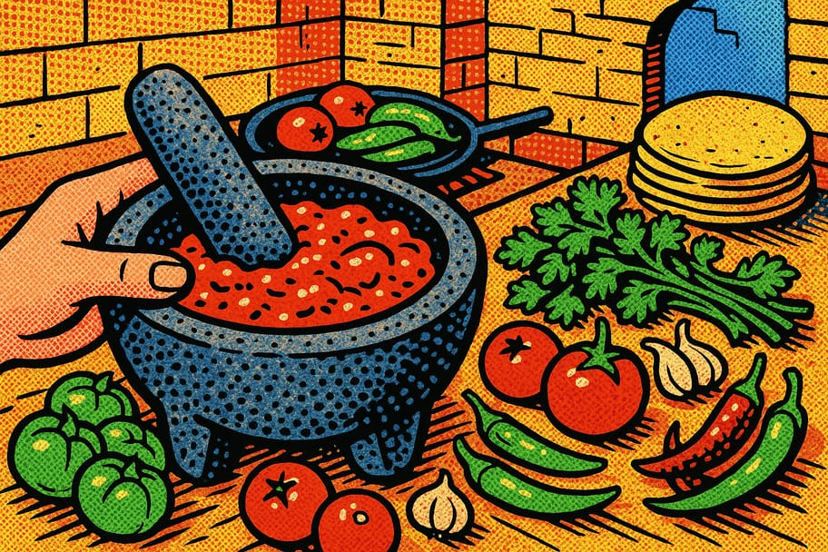

Recetario de salsas de molcajete

El molcajete saca a los ingredientes un sabor que la licuadora no logra: la piedra muele y a la vez machaca, soltando los aceites del chile y del jitomate. Aquí van tres salsas de mesa imprescindibles. Si no tienes molcajete, puedes usar la licuadora a pulsos cortos para no dejarla aguada.
🟢 1. Salsa verde cruda
- ☐ 6 tomates verdes (tomatillos)
- ☐ 2 chiles serranos
- ☐ 1 diente de ajo y un trozo de cebolla
- ☐ Cilantro y sal al gusto
- 1Moler la base
Machaca primero el ajo, el chile y un poco de sal en el molcajete hasta hacer una pasta. Así se libera todo el aroma.
- 2Agregar el tomate
Incorpora los tomates verdes crudos y la cebolla, machacando hasta lograr una salsa con textura.
- 3Terminar
Añade cilantro picado y ajusta la sal. Queda fresca y ácida, ideal para tacos y carnitas.
🔴 2. Salsa roja tatemada
- ☐ 4 jitomates maduros
- ☐ 2 chiles (jalapeño o de árbol)
- ☐ 1 diente de ajo y un trozo de cebolla
- ☐ Sal al gusto
- 1Tatemar
Asa en un comal el jitomate, los chiles, el ajo y la cebolla hasta que la piel se queme un poco y aparezcan manchas negras.
- 2Moler
Machaca primero ajo, chile y sal; luego añade jitomate y cebolla tatemados. El tatemado da ese sabor ahumado característico.
- 3Ajustar
Corrige sal y, si la quieres más líquida, agrega unas gotas de agua. Perfecta para huevos, tacos y guisados.
🌶️ 3. Salsa de chile de árbol
- ☐ 15 chiles de árbol secos
- ☐ 3 jitomates o 4 tomates verdes
- ☐ 2 dientes de ajo
- ☐ Sal y, opcional, un poco de aceite
- 1Tostar el chile
Tuesta los chiles de árbol en el comal unos segundos por lado, sin que se quemen (amargarían). Reserva.
- 2Asar el resto
Asa el jitomate y el ajo en el mismo comal hasta que estén suaves y manchados.
- 3Moler
Machaca ajo, chile y sal, luego el jitomate. Es una salsa muy picante y aromática; va bien con todo, úsala con medida.
💡 Consejos del molcajete
- Cura un molcajete nuevo moliendo arroz crudo y luego ajo con sal hasta que no suelte arenilla.
- Empieza siempre por el ajo, el chile y la sal: forman la pasta que da estructura a la salsa.
- Tatemar los ingredientes en comal cambia por completo el sabor; vale la pena el paso extra.
¿Te sirvió este recetario?
Compártelo en tu comunidad y explora más recursos en Guardianes del Pulque.
← Más recetarios 💚 Donar